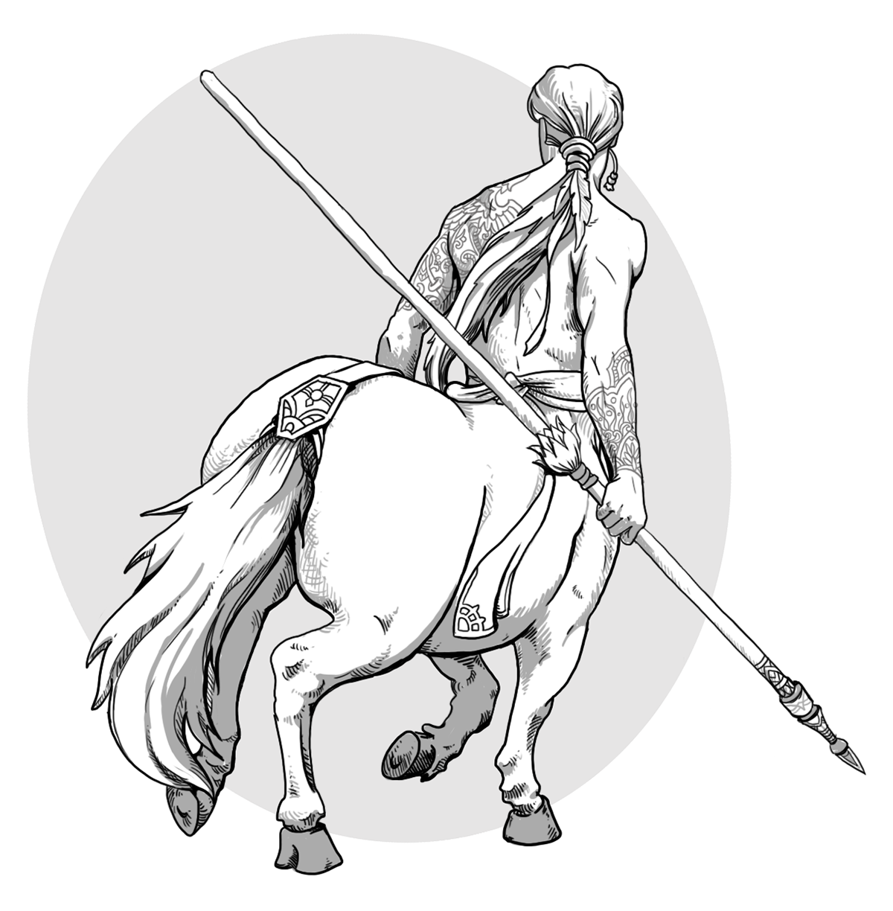

Complete Monster
by
Radaghast Kary
← Celestial Viper
↑Index↑
Centaur Mummy →

Illustration by Mariana Ruiz Villarreal,
Public Domain
Centaur
is a
Centauroid
Members:
Centaur Mummy
Centaur Ravager
General
General links
Centaur on Wikipedia
Myth links
Centaur on Wikipedia
Centaur on Wikipedia
Centaur on Wikipedia
Centaur on Mythology Wikia
5e
NG
D&D 5 facts
Size: Large
Type:
Monstrosity
CR: 2
D&D 5 sources
Monster Manual
, p. 38
Monsters & Creatures
, p. 24
Xanathar’s Guide to Everything
, p. 98
D&D 5 links
Centaur in 5e d20 SRD
Centaur on AideD&D
3e
NG
D&D 3.0 facts
Abilities: Str 18, Dex 14, Con 15, Int 8, Wis 13, Cha 11
AC: 15 (-1 size, +2 Dex, +2 natural, +2 large shield)
Advancement: By character class
Attacks: Greatclub +7 melee (or heavy lance +7 melee), 2 hooves+3 melee; or mighty composite longbow (+4) +5 ranged
CR: 3
Damage: Greatclub 1d10+4 (or heavy lance 1d8+4), hoof 1d6+2; ormighty composite longbow 1d8+4
HD: 4d8+8 (26)
Initiative: +2 (Dex)
Organization: Solitary, company (5-8), troop (8-18 plus 1 leaderof 2nd-5th level), or tribe (20-200 plus 10 3rd-level sergeants, 5 5th-level lieutenants, and 1 leader of 5th-9th level)
Reach: 5 ft. by 10 ft./5 ft.
Saves: Fort +3, Ref +6, Will +5
Size: Large
Skills: Hide +2 Listen +4, Move Silently +4, Spot +4,Wilderness Lore +5
Speed: 50 ft.
Terrain: Temperate forest
Treasure: Standard
Type:
Monstrous Humanoid
D&D 3.0 links
Centaur in 3.0 d20 SRD
D&D 3.5 facts
Type:
Monstrous Humanoid
Size: Large
CR: 3
D&D 3.5 sources
Monster Manual
, p. 32
D&D 3.5 links
Centaur in 3.5e d20 SRD
Pathfinder 2 facts
Level: 3
Pathfinder 2 sources
Bestiary
Pathfinder 2 links
Centaur Monster in Pathfinder 2 SRD
Pathfinder links
Centaur in Pathfinder 1 SRD
1e
BLUEHOLME sources
BLUEHOLME Journeymanne Rules
BLUEHOLME links
Centaur Dreamscape Design
0e
OD&D facts
Number Appearing: 2-20
AC: 5
Move: 18
HD: 4
Chance in Lair: 05%
Treasure: Type A
OD&D sources
Monsters & Treasure
, p. 4
N
S&W
facts
AC: [14] – leather [12]
Attacks: 2 kicks (1d6) or weapon (+2 for strength)
HD: 4
HDE: 5
Move: 6
Special: None
XP: 240
S&W
sources
The Blue Book of Dangers and Dweomers
, p. 80
{kind=link}